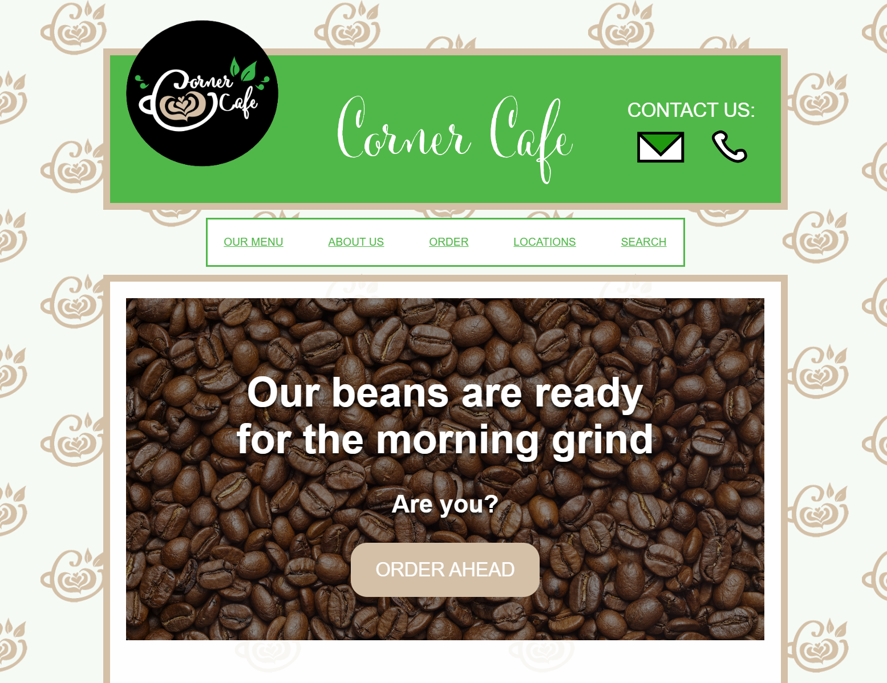

*Note: It is imperative that all of your coursework throughout your time here at F.I.R.S.T. be saved on an external hard/flash drive from now through graduation. You will be referencing your work again in the future to be added to your portfolio, so we expect you not to delete any of your work, including working files.*

NOTE: This is NOT a representation of what is expected for the final product of this assignment; it is just an example of what could be done. Since every student has a different style guide they created in 104, your implementation of the restaurant site should be completely unique.
OBJECTIVES:
NEW CONCEPTS WE'LL BE USING:
HOW TO COMPLETE:
Remember the Web Style Guide project from 104? Well, it's back, too! Over the next three days of class, you're going to be creating a restaurant web site based off of the style guide you created in 104. You will be creating two pages at a minimum: a Home Page and a Menu Page.
You will probably not need everything you created in the style guide: for instance, most of the button states will not be used, nor will the text fields, most likely. However, you should try to stick as close to the guidelines you specified in the style guide.
This is one of your last big coding projects in the course, aside from the Final Eval, so go all out! Especially considering...you'll be presenting your completed Final Project to the class for Critique!
The Web Style Guide Project was done in Week 16 from 104; if you need to download what you originally submitted, scroll to the bottom of the Week 16 module, and you'll see the Web Style Guide Project Final assignment.
THIS ASSIGNMENT IS ONLY A CHECKPOINT FOR THE RESTAURANT FINAL PROJECT. THE REQUIREMENTS FOR THE ENTIRE PROJECT ARE LISTED BELOW, BUT YOU ARE ONLY EXPECTED TO COMPLETE THE HOME PAGE TODAY, IDEALLY.
THE COMPLETED PROJECT, INCLUDING THE MENU PAGE, WILL BE SUBMITTED ON DAY 3 OF THIS CLASS WEEK IN A SEPARATE PROJECT ASSIGNMENT.
YOUR PRESENTATION OF YOUR RESTAURANT SITE WILL TAKE PLACE THE DAY AFTER YOU SUBMIT THE PROJECT ASSIGNMENT.
REQUIREMENTS
Site Navigation
Home Page
Menu Page
Responsiveness
TIPS
Can I redo my style guide? (answer: NO)
You may discover that the style guide you created is hard to work with, or ambiguous about certain design decisions, or doesn't look as good as you thought it would.
If you're not happy with the style guide you created in 104, take note of what went wrong! Reflecting on how you could have done better and carrying those reflections forward into your next project is one of the best ways to grow, both as a graphic designer and as an individual.
Then, make the best of the situation and try to work around the issues you created for yourself. Building from a style guide can sometimes seem restricting or limiting, but at the same time, it can force you to be creative with what you have available to you. You might be surprised what you're able to create while trying to work around a design problem!
The :active Pseudo-Class (the clicked state)
One of the button states you might have defined in your style guide is the Active button state; this is the state that is triggered when you click on a button (more specifically when your mouse is in the down state over a button).
To style that, we can use a pseudo-class similar to :hover called :active. By using this :active pseudo-class in a selector, we can style the click state (or technically the "mouse down" state) of a button. An example of what that might look like is below:
/* styling the hover state */
.button:hover {
opacity: 0.5;
}
/* styling the active (click/mouse-down) state */
.button:active {
border: 3px solid green;
}
This state can be applied to any element, but most often it is applied to clickable things like hyperlinks and buttons. Try and implement this in your own website, based off of what you included in your style guide!
A Multi-Page Menu
Some restaurants have such a large menu that they don't include them in a single page; instead, they spread their menu items across multiple pages (not unlike the multiple Gallery option you had for your Portfolios).
An example of this is the McDonald's site menu: https://www.mcdonalds.com/us/en-us/full-menu/breakfast.html
Notice that they also use a Two Column Layout, with the sidebar including the different menu categories (which is also included in their "Our Menu" dropdown menu).
Consider an approach like this for your restaurant's menu if you want to challenge yourself!
Go further!
This project only requires you to build the Home and Menu pages, but restaurants often have more pages than that. If you have the time, and you're confident about your Home and Menu pages, go further and build out even more of your restaurant's site!
PRESENTATIONS
After you submit your Final Project, on the following class day, you will present your Restaurant site to the class for a critique. The presentation is mandatory, and if you don't don't participate, you won't get points for it!
In the Presentation, you'll be expected to go through
For the Critiques, while someone is presenting, try to provide feedback about something you think they did well on their site, and/or something you think that could be improved (making sure to explain WHY you think so).
When critiquing, remember to be kind, but also to be helpful. Simply saying "it looks great" is encouraging, which is good, but it will not help the person receiving feedback improve. On the flip side, saying "it looks terrible" is subjective and more than a little cruel; instead phrase your comment like "I think your site would look better if you [suggestion for improvement] because [reason for suggestion]".
Critiques benefit both the person receiving the critique and the person giving the critique; being able to articulate your opinions in a clear and convincing way is a very beneficial skill, especially in the Graphic Design field!
HOW TO SUBMIT: